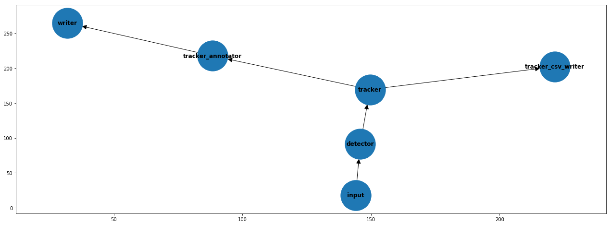

Object tracking pipeline¶
This example shows a basic pipeline that performs object tracking.
Contents:
Object tracking pipeline with SORT algorithm.
Object tracking pipeline with DeepSORT algorithm.
[1]:
%load_ext autoreload
%autoreload 2
[2]:
from videoanalytics.pipeline import Pipeline
from videoanalytics.pipeline.sources import VideoReader
from videoanalytics.pipeline.sinks import VideoWriter
We will be using the same video as in the previous examples. Note: the video used in this example was downloaded from youtube.
[3]:
DATA_PATH = "../data/"
# Input
INPUT_VIDEO = DATA_PATH+"/input/test_video.mp4"
START_FRAME = 0
MAX_FRAMES = 100
[4]:
%%HTML
<div style="text-align: center">
<video width="600" height="400" controls>
<source src="../data/input/test_video.mp4" type="video/mp4">
</video>
</div>
[5]:
# Output
OUTPUT_VIDEO = DATA_PATH+ "/output/test_output.avi"
Object tracking requires that objects are identified in each individual frame. To perform this task the same components of the object detection examples will be used in the pipeline.
[6]:
# Specific components for object detection
from videoanalytics.pipeline.sinks.object_detection import DetectionsAnnotator, DetectionsCSVWriter
from videoanalytics.pipeline.sinks.object_detection.yolo4 import YOLOv4DetectorTF
[7]:
# Detector
# Object Detector model weights (Tensorflow)
DETECTOR_WEIGHTS_FILENAME = DATA_PATH+ "object_detection/checkpoints/yolov4-416-tf"
#DETECTOR_WEIGHTS_FILENAME = DATA_PATH+ "object_detection/checkpoints/yolov4-tiny-416"
# Classes names for Detections Annotator
DETECTOR_CLASSES_FILENAME = DATA_PATH+"object_detection/classes_definitions/coco.txt"
# CSV with Detections filename
DETECTIONS_FILENAME = DATA_PATH+"/output/detections.csv"
Object tracking pipeline with SORT algorithm¶
[8]:
from videoanalytics.pipeline.sinks.object_tracking import TrackedObjectsAnnotator, TrackedObjectsCSVWriter
from videoanalytics.pipeline.sinks.object_tracking.sort import SORT
TRACKED_OBJS_FILENAME = DATA_PATH+"/output/trackings.csv"
[9]:
# 1. Create the global context
context = {}
# 2. Create the pipeline
pipeline = Pipeline()
# 3. Add components
# 3.1 Source
pipeline.add_component( VideoReader( "input",context,
video_path=INPUT_VIDEO,
start_frame=START_FRAME,
max_frames=MAX_FRAMES))
# 3.2 Detector
pipeline.add_component( YOLOv4DetectorTF("detector",context,weights_filename=DETECTOR_WEIGHTS_FILENAME) )
# 3.3 Tracker (SORT)
pipeline.add_component( SORT("tracker",context) )
# 3.4 Annotate tracked objects in output video
pipeline.add_component( TrackedObjectsAnnotator("tracker_annotator",context) )
# 3.5 Save trackings to CSV for posterior anayisis
pipeline.add_component( TrackedObjectsCSVWriter("tracker_csv_writer",context, filename = TRACKED_OBJS_FILENAME) )
# 3.6 Output video
pipeline.add_component(VideoWriter("writer",context,filename=OUTPUT_VIDEO))
[10]:
# 4. Define connections
pipeline.set_connections([
("input", "detector"),
("detector", "tracker"),
("tracker", "tracker_annotator"),
("tracker", "tracker_csv_writer"),
("tracker_annotator", "writer")
])
[11]:
pipeline.optimize()
[12]:
import matplotlib.pyplot as plt
fig,axes = plt.subplots(1,1,figsize=(22,8))
pipeline.plot(ax=axes)

[13]:
# 5. Execute
pipeline.execute()
print("Total execution time [s]:", pipeline.get_total_execution_time())
Total execution time [s]: 60.35206350700173
[14]:
import pandas as pd
# 6. Report (optional)
metrics_df = pd.DataFrame.from_dict(pipeline.get_metrics(), orient='index',columns=["time [s]"])
metrics_df
[14]:
| time [s] | |
|---|---|
| input_avg_dt | 0.009327 |
| detector_avg_dt | 0.559688 |
| tracker_avg_dt | 0.000865 |
| tracker_csv_writer_avg_dt | 0.000018 |
| tracker_annotator_avg_dt | 0.000330 |
| writer_avg_dt | 0.030823 |
Exploration of results¶
Display the output video with annotated bounding boxes.
Note: currently XVID format is not supported by jupyter.
[15]:
%%HTML
<div style="text-align: center">
<video width="600" height="400" controls>
<source src="../data/output/test_output.avi" type="video/mp4">
</video>
</div>
[16]:
df_tracks = pd.read_csv(TRACKED_OBJS_FILENAME,
names=["frame_num","obj_id", "x","y","w","h"])
df_tracks.head(5)
[16]:
| frame_num | obj_id | x | y | w | h | |
|---|---|---|---|---|---|---|
| 0 | 0 | 2 | 696 | 387 | 111 | 104 |
| 1 | 0 | 1 | 860 | 361 | 140 | 137 |
| 2 | 1 | 2 | 696 | 387 | 111 | 104 |
| 3 | 1 | 1 | 860 | 361 | 140 | 137 |
| 4 | 2 | 2 | 696 | 387 | 108 | 102 |
Object tracking pipeline with DeepSORT algorithm¶
[17]:
DEEPSORT_MODEL_FILENAME = DATA_PATH+"object_tracking/mars-small128.pb"
[18]:
from videoanalytics.pipeline.sinks.object_tracking.deepsort import DeepSORT
# 1. Create the global context
context = {}
# 2. Create the pipeline
pipeline = Pipeline()
# 3. Add components
# 3.1 Source
pipeline.add_component( VideoReader( "input",context,
video_path=INPUT_VIDEO,
start_frame=START_FRAME,
max_frames=MAX_FRAMES))
# 3.2 Detector
pipeline.add_component( YOLOv4DetectorTF("detector",context,weights_filename=DETECTOR_WEIGHTS_FILENAME) )
# 3.3 Tracker (DeepSORT)
pipeline.add_component( DeepSORT("tracker",context,model_filename=DEEPSORT_MODEL_FILENAME) )
pipeline.add_component( TrackedObjectsAnnotator("tracker_annotator",context) )
# 3.3 Sink
pipeline.add_component(VideoWriter("writer",context,filename=OUTPUT_VIDEO))
# 4. Define connections
pipeline.set_connections([
("input", "detector"),
("detector", "tracker"),
("tracker", "tracker_annotator"),
("tracker_annotator", "writer")
])
# 5. Execute
pipeline.execute()
print("Total execution time [s]:", pipeline.get_total_execution_time())
Total execution time [s]: 75.83832986899506
[19]:
metrics_df = pd.DataFrame.from_dict(pipeline.get_metrics(), orient='index',columns=["time [s]"])
metrics_df
[19]:
| time [s] | |
|---|---|
| input_avg_dt | 0.007867 |
| detector_avg_dt | 0.692927 |
| tracker_avg_dt | 0.024441 |
| tracker_annotator_avg_dt | 0.000456 |
| writer_avg_dt | 0.030239 |
Exploration of results¶
[20]:
df_tracks = pd.read_csv(TRACKED_OBJS_FILENAME,
names=["frame_num","obj_id", "x","y","w","h"])
df_tracks.head(5)
[20]:
| frame_num | obj_id | x | y | w | h | |
|---|---|---|---|---|---|---|
| 0 | 0 | 2 | 696 | 387 | 111 | 104 |
| 1 | 0 | 1 | 860 | 361 | 140 | 137 |
| 2 | 1 | 2 | 696 | 387 | 111 | 104 |
| 3 | 1 | 1 | 860 | 361 | 140 | 137 |
| 4 | 2 | 2 | 696 | 387 | 108 | 102 |